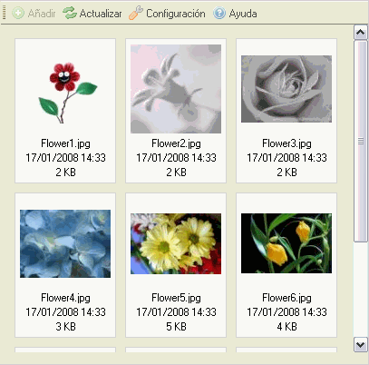
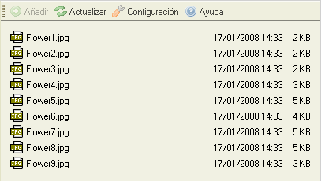

El panel de ficheros muestra los ficheros disponibles en la carpeta seleccionada.
El panel de ficheros puede presentar dos vistas diferentes, dependiendo de la configuración de CKFinder (vea "Configuración"). La siguiente, es una comparación de la vista "Iconos" y la vista "Lista" para la misma carpeta:


Para seleccionar un fichero, y por ende convertirlo al "fichero activo" en CKFinder, simplemente haga click sobre el fichero. Para identificar más fácilmente que el puntero del ratón está sobre un fichero, el área del mismo será coloreada. El fichero seleccionado tendrá un color de fondo diferente (generalmente Azul).
Se pueden realizar operaciones avanzadas en un fichero utilizando su "Menú contextual". Las siguientes opciones estan disponibles:
Nota: Algunos botones del menú contextual, podrían estar deshabilitados, esto depende de los ajustes que su administrador haya hecho en la configuración de CKFinder.
Para seleccionar un fichero, y por ende regresarlo a la aplicación solamente haga click sobre la opción "Seleccionar".
Para previsualizar un fichero en el navegador, haga click en el botón "Visualizar". No todos los tipos de ficheros pueden ser visualizados por los navegadores, pero esta característica es útil para imagenes, texto y ficheros del tipo PDF. En otros casos, el navegador le preguntará si desea abrir el fichero con la aplicación correspondiente.
Para descargar (bajar) un fichero, haga click en el botón "Descargar", el navegador le solicitará el lugar donde desea guardar el fichero en su ordenador.
Para renombrar un fichero, haga click en el botón "Renombrar" en el menú contextual. Una ventana aparecerá con el nombre actual del fichero, donde deberá escribir el nuevo nombre y confirmar la operación.
No todos los caracteres pueden ser usados para establecer un nombre de fichero, debido a limitaciones en los sistemas donde CKFinder se ejecuta. Por ejemplo, los siguientes caracteres, no pueden usarse para dar nombre a carpetas ni ficheros: \ / : * ? " < > |
Atención: Al renombrar un fichero, los enlaces o inserciones de medios disponibles en otras páginas que apunten al fichero renombrado podrían quedar "rotos" y por tanto no funcionar. Así que sea cauteloso cuando use esta característica.
Para borrar un fichero, haga click en la opción "Borrar" del menú contextual. Un mensaje de confirmación aparecerá para asegurarse que realmente esa operación es la que desea realizar.
Atención: Al borrar un fichero, los enlaces o inserciones de medios disponibles en otras páginas que apunten al fichero recien borrado quedaran "rotos" y por tanto no funcionar, así que sea cauteloso al utilizar esta opción.